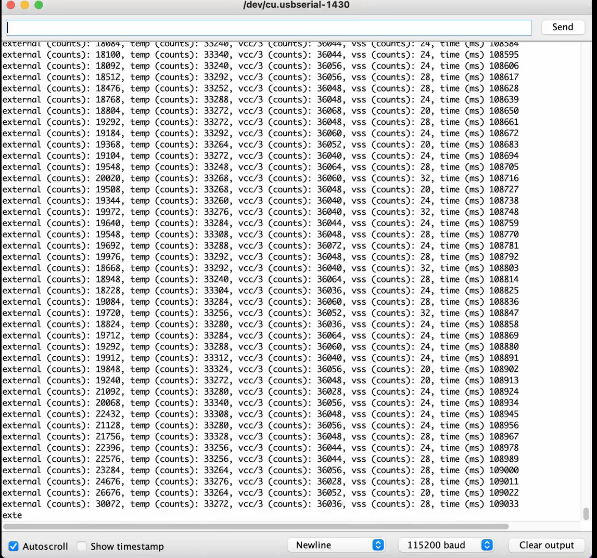

Lab 1 consisted of the setup and testing of the Artemis Redboard Nano as well as the Arduino IDE. Setup includes installing the proper applications and packages, and testing includes uploading example scripts provided by the Artemis community.
The first step of the lab is to install the Arduino IDE onto the computer that will be used for the rest of the class. In my case, the IDE was installed on a 2018 Macbook Pro running MacOS, so the process was as simple as extracting the zip file found on the Arduino website and moving the appliation to the corect folder.
Next, within the Arduino IDE, the SparkFun Apollo 3 package was installed.
The first example used in the testing of the board is a simple blinking script. The code is provided by the IDE, and a brief skim of what was written showed that the blue LED on the Artemis Nano will turn on for one second, then turn off for one second repeatedly in a loop. A video can be seen below displaying such action
The second example used in the testing of the board is its serial port. The script provided by the IDE sets a BAUD rate of 115200 and prints out 10 lines of testing using the printf method, and finally tells the user to write into the serial monitor to see the script echo it back. The video below shows the initial 10 lines of strings being printed, as well as the expected behavior when a user types into the input box.
The third example used in the testing of the board is its analog sensors, specifically the temperature sensor. In the script to be uploaded onto the board, the program consists of a constant loop of analog readings being printed, and the temperature sensor was tested by blowing warm air onto it. As the board spent more time under the air, the temperature continued to rise and when the board was taken away from the source of warm air, the temperature readings started to drop, all signals that the sensor is acting correctly, and that the code was properly uploaded. Below is a screenshot of the changing readings taken at a single point in time.
The final example consisted of testing the built-in microphone on the artemis board. The serial monitor would constantly display the outputs, as the direct frequencies that the microphone could pick up were being written. By whistling/making noise, the output changed accordingly.